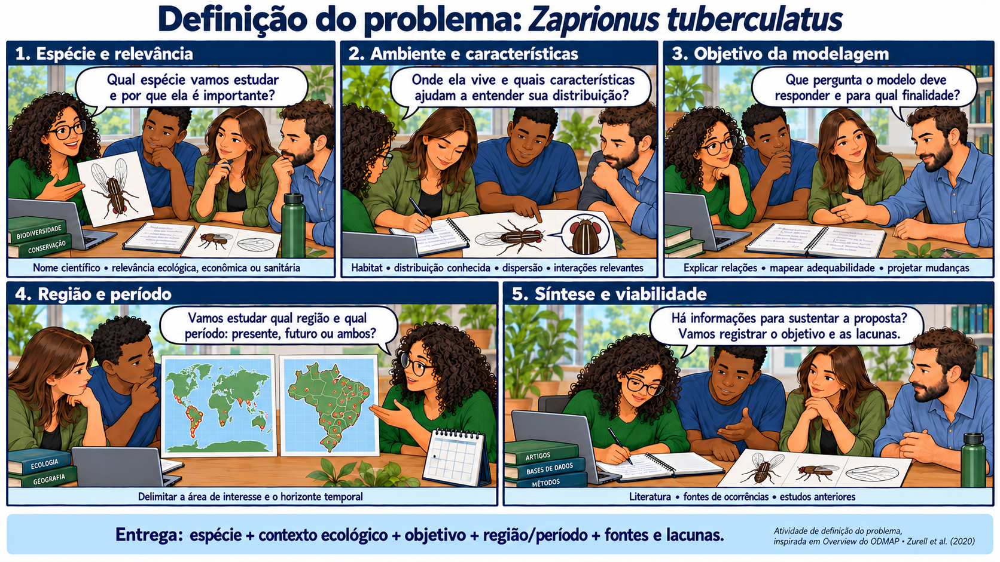

CAPÍTULO 01 · O · Overview
A pergunta nasce no campo
A equipe observa, registra e transforma uma dúvida em uma pergunta que o script pode investigar.
Base no curso: slides 19–28; 93–106; 139–159.
Durante uma visita a uma área com frutos maduros e em decomposição, a equipe encontra pequenas moscas. Uma pesquisadora registra o local; outro integrante fotografa o substrato e prepara o material para identificação. A pergunta surge na conversa: em que outras regiões existem condições ambientais semelhantes às dos locais onde a espécie ocorre?
A história acompanha uma pesquisa didática com Zaprionus tuberculatus. As situações de campo são simuladas para orientar a leitura; identificação, coordenadas e resultados de uma pesquisa efetiva precisam de documentação própria. O código e os nomes dos objetos seguem o script do curso.

Uma observação ainda não é uma identificação
Encontrar uma mosca em um fruto não basta para atribuir o registro a Z. tuberculatus. A equipe conserva a evidência, anota a procedência e encaminha a identificação. Só depois de conferir o táxon o ponto pode entrar na tabela de presenças. A primeira decisão do script é explicitar qual espécie será estudada.
my.species <- "Zaprionus tuberculatus"Uma pergunta compatível com os dados
A equipe decide investigar onde há condições ambientais associadas às ocorrências conhecidas, com ênfase no Brasil, e como essa adequabilidade potencial muda sob os cenários climáticos previstos no roteiro. Essa formulação liga o campo ao objetivo apresentado no slide 154 e às projeções do script.
| No caderno | Como escrever |
|---|---|
| Observação documentada | Um organismo foi coletado em determinado lugar e data; a identificação pode ser conferida. |
| Inferência | O modelo estima associações entre as ocorrências e os preditores escolhidos. |
| Hipótese | A disponibilidade de água ajuda a limitar a ocorrência; a associação estimada será examinada à luz dessa explicação. |
O grupo também considera alternativas: recursos disponíveis, deslocamento dos organismos e esforço de coleta podem produzir padrões semelhantes. A pergunta orienta o modelo; o mapa não transforma todas essas explicações em mecanismos demonstrados.